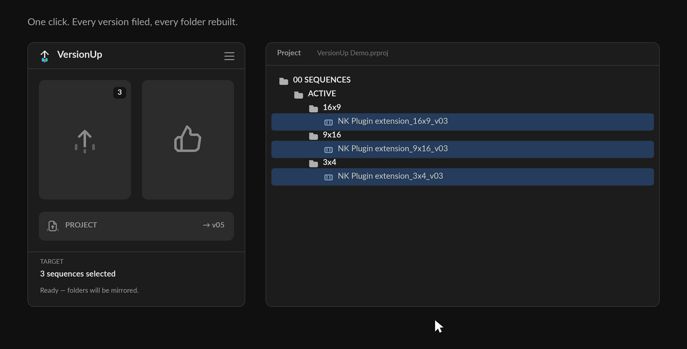
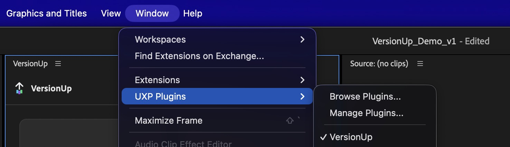
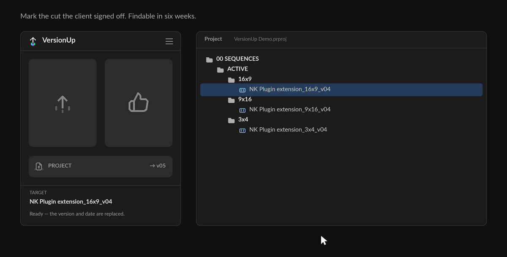
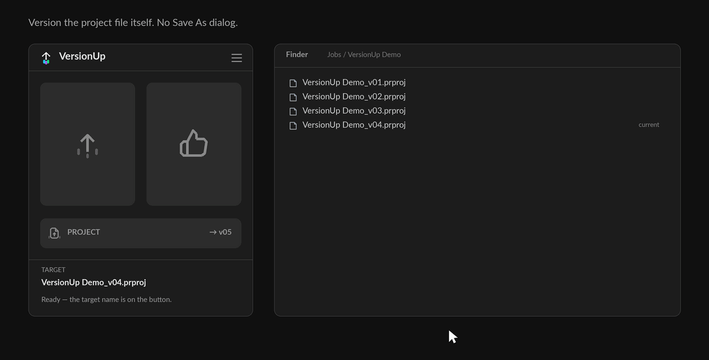
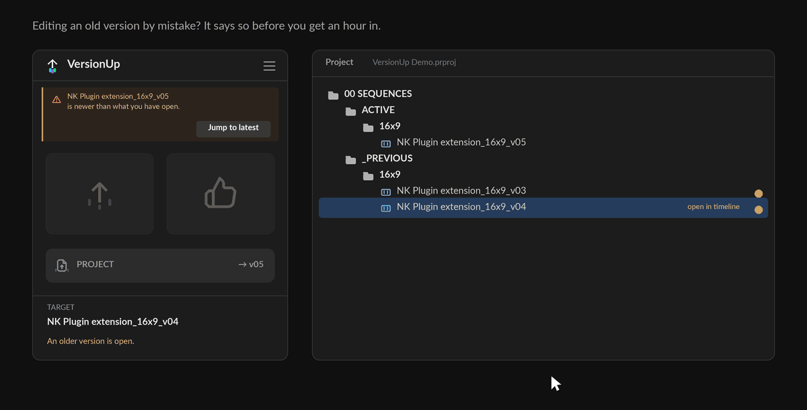
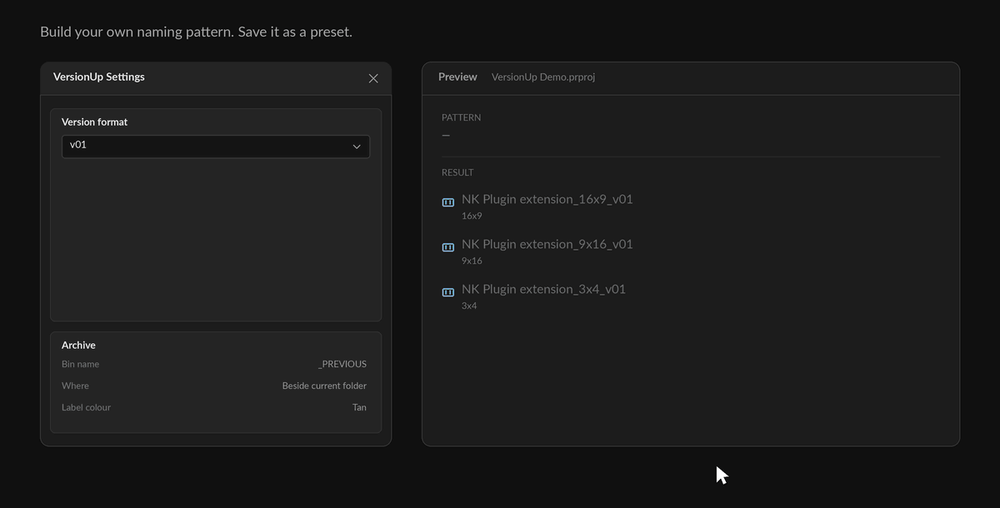
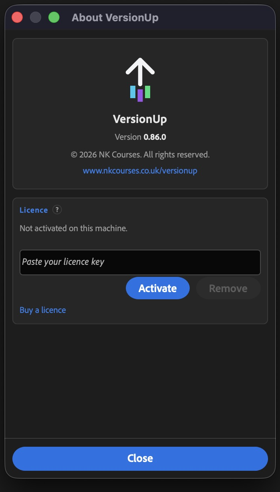
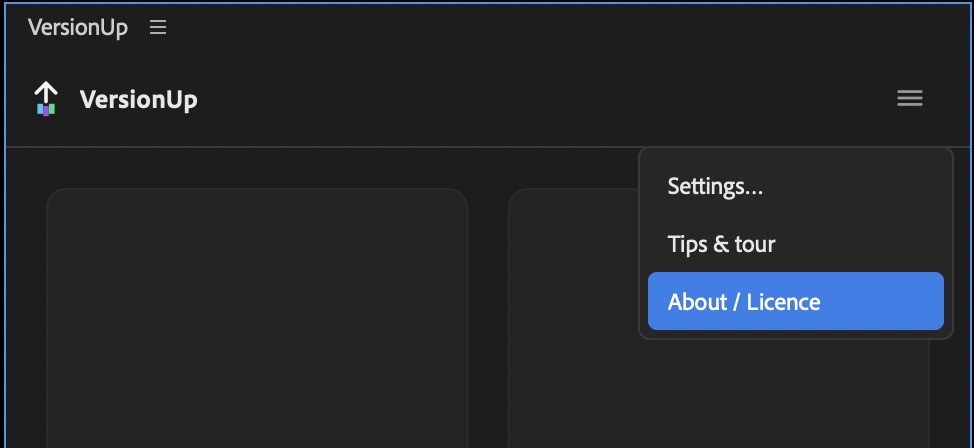

VersionUp
A Premiere Pro panel that versions a sequence in one click — archives the old copy, keeps your bin structure, and leaves you working on the sequence you were already on.
Overview
Versioning a sequence by hand is four steps — duplicate, rename, drag into a folder, and try to remember which one the client approved. VersionUp does it in one click.
The part that matters most: most tools move you onto a new copy and leave you hunting for it. VersionUp renames the sequence in your timeline and archives the duplicate instead. Your open tab never changes. The sequence you can see is the sequence you are working on, always.

Requirements
| Premiere Pro | 25.6 or newer. Check under
Premiere Pro > About Premiere Pro. Earlier versions cannot run it — VersionUp
uses Adobe's current plugin system (UXP), and there is no build for older releases. |
|---|---|
| System | macOS or Windows. |
| Licence | One key covers two machines — a desktop and a laptop. |
Install and activate
The short version:
- Check your email and press My orders to find your download link and licence key.
- Double-click the
.ccxfile. Creative Cloud Desktop installs it for you — nothing to unzip. - Quit Premiere Pro and open it again. Premiere only looks for new panels at startup.
- Window > UXP Plugins > VersionUp.
- In the panel, open the ☰ menu > About / Licence, paste your key and press Activate.

Double-clicking did nothing? Open Creative Cloud Desktop first, then double-click the file again.
Quick start
- Open a project and select a sequence, or just have one open in the timeline.
- Press Version up.
- Look at your Project panel: the previous version is now in a
_PREVIOUSbin with a colour label, and the sequence in your timeline has the new number.
That is the whole loop. Everything below is detail.
Version up
Duplicates the sequence, bumps the number, and files the old copy away with a colour label. Four fiddly steps become one.
Your folder structure is rebuilt inside the archive, not flattened. A 9x16
archived from a 9x16 bin lands in a 9x16 bin inside _PREVIOUS — not in one flat heap
at the bottom of the project.
Choosing what to version
| Select nothing | Versions the sequence open in your timeline. |
|---|---|
| Select sequences | Versions every one you selected in the Project panel. |
| Select a bin | Versions everything inside it, at any depth. |
A batch is planned against the current state of the project as it goes, so twenty at once can never collide with itself. One failure does not stop the rest.
Approve
One click marks the cut the client signed off: moves it into your approved bin, colours it
green, and renames it — Brand Film_MASTER. Findable from the Project panel weeks
later without opening the panel at all.

Approving an old version is allowed, on purpose. Clients sign off v03 while you are already on v05. The approval marker replaces the version and date, because an approved cut is a deliverable rather than another rung on the ladder.
Press it twice and nothing bad happens. Already approved means re-coloured, not re-moved.
Project
Versions the .prproj itself — Job_v01.prproj becomes
Job_v02.prproj, and the new file becomes the one you are working in.

This one cannot be undone. Everything else in VersionUp is a single Cmd+Z; saving a project writes a file. That is why the button shows you the name it is about to use.
The wrong-version guard
Open an old sequence by mistake and an amber banner says so, names the newer version, and offers to jump you straight to it.

Preview before it moves
Hold Alt — Option on a Mac — and click any button. Nothing happens. The log shows every name it would create and which bin each one would go to.
Useful the first time you point it at a real project, and useful before a batch of twenty.
Alt-click Project opens the project's folder in Finder or Explorer instead.
Naming and tokens
☰ > Settings. Names are built from tokens, and you can rearrange them or write your own pattern.
| Token | Becomes |
|---|---|
{name} | The sequence's own name |
{version} | v01, v02, v03… |
{project} | The project file's name |
{client} | Whatever you set in Settings |
{initials} | Yours, from Settings |
{date} | Today, in the order you choose |
{time} | The current time |
{dimensions} | The sequence's frame size, e.g. 1920x1080 |

{dimensions} is the one worth knowing about: a 1080x1920 and a 1920x1080 name
themselves apart without you typing anything.
You can save patterns as presets. Or leave the defaults alone — they are sensible.
Bins and colours
Call the bins what you already call them. _PREVIOUS and APPROVED are
just defaults — change them in Settings and VersionUp uses yours.
Label colours for archived and approved sequences are yours too, so old versions stay visually distinct at a glance in the Project panel.
Hiding buttons and docking
Hide the buttons you don't use. If you never version the project file, turn Project off in Settings and the panel shrinks to what you actually press.
It fits any dock. Two rows when there is space, three icons in a strip when there isn't — it reflows as you drag it, so it works parked as a narrow column beside your timeline.
Your licence
One key, two machines — a desktop and a laptop, or a work machine and a home one. One payment, no subscription.
Changing computer? Open ☰ > About / Licence on the machine you are leaving behind and press Remove. That frees the seat immediately, so you can activate the new one straight away.

Updates
VersionUp tells you when there is a new version — a quiet bar at the top of the panel, never a nag. Wave it off and it stays out of the way; it will not pester you about the same version twice.
Updates are free. Download the new .ccx from your original purchase link, double-click
it, and restart Premiere. Your licence key stays activated.
Sending feedback
☰ > Submit feedback. Tell me it's a bug or a feature request, write what happened, and press Send. Your email is optional, but without it I cannot reply.

One report per thing, please. And if something happens twice, say so — knowing a fault is repeatable is worth more than a long description of it.
What is and isn't collected
VersionUp does not collect or transmit any project data, file names, or usage data. Feedback is sent only when you click Send — it includes your message, your optional email, your operating system and the app version.
Nothing is sent in the background, and nothing about your projects, sequences, bins or clients ever leaves your machine. The panel talks to the network for exactly two things: checking your licence key, and checking whether an update exists.
Troubleshooting
Double-clicking the .ccx did nothing
Open Creative Cloud Desktop first, then double-click the file again.
VersionUp isn't in the Window menu
Check Premiere Pro > About Premiere Pro — VersionUp needs 25.6 or
newer. And look under Window > UXP Plugins, not Window >
Extensions; that menu is for the older kind of plugin.
My licence key was refused
Re-copy it — a trailing space is the usual culprit. If you have used both machines, press Remove on one you no longer use to free the seat.
The buttons are greyed out
Either there is no licence key activated yet, or there is no project open. Add your key in ☰ > About / Licence.
Nothing happened when I pressed a button
Check whether you were holding Alt or Option — that is the preview mode, and it deliberately does nothing except list what it would do. Open the log at the bottom of the panel to see it.
What it doesn't do
- It won't tidy an existing mess. It stops the mess starting from the day you install it.
- It doesn't sync, share or back anything up. It renames and moves things inside your project.
- Project versioning can't be undone. Everything else is a single Cmd+Z.
- It doesn't replace autosave. Different job entirely.
Support
The quickest route is ☰ > Submit feedback inside the panel — it attaches your version and system automatically, which saves us both an email.
Otherwise: support@nkcourses.co.uk. I am one person, so it might take a day, but it will be me answering.